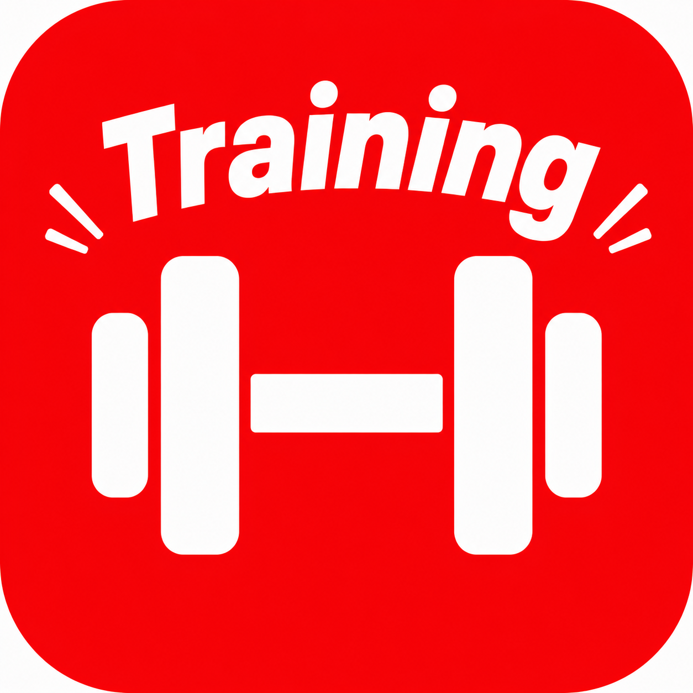

メイン種目
| セット | 重量 | 回数 | |
|---|---|---|---|
| 1 | 20kg | 15reps | ウォームアップ |
| 2 | 47kg | 10〜12reps | メイン |
| 3 | 47kg | 10〜12reps | メイン |
| 4 | 47kg | 10〜12reps | メイン |
休憩：メインセット間 1〜2分 47kg×12×3達成（8/16）。安定したら49.5kgへ
ブルガリアンスクワット（ダンベル）
| セット | 重量 | 回数 | |
|---|---|---|---|
| 1 | 20kg | 10reps | ウォームアップ① |
| 2 | 30kg | 5reps | ウォームアップ② |
| 3 | 47kg | 10reps | メイン |
| 4 | 47kg | 10reps | メイン |
| 5 | 47kg | 10reps | メイン |
休憩：メインセット間 2〜3分 ⚠️ ついに47kg＝1月に負傷した重量に到達（8/10・8/16）。痛みなく扱えているが、ここで完全に定着させること。昇格条件は「3セット完遂＋翌日の腰の感覚OK」の両方。48kg以降は1kg刻みで慎重に。腰の状態が悪い日はスクワットのみでOK
ダンベルデッドリフト
補助種目
| セット | 重量 | 回数 | |
|---|---|---|---|
| 1 | 20kg | 15reps | ウォームアップ |
| 2 | 45kg | 8〜12reps | メイン |
| 3 | 45kg | 8〜12reps | メイン |
| 4 | 45kg | 8〜12reps | メイン |
休憩：メインセット間 1〜2分 肘を引き下ろす意識で。45kgへ昇格。8/7・8/14に45kgでフォームが崩れて40kgに戻した経緯あり。数字より「丁寧に引く」優先。45kg×10×3がきれいに揃ったら47kgへ
| セット | 重量 | 回数 | |
|---|---|---|---|
| 1 | 4kg | 10reps | ウォームアップ |
| 2 | 8kg | 8〜10reps | メイン |
| 3 | 8kg | 8〜10reps | メイン |
| 4 | 8kg | 8〜10reps | メイン |
休憩：メインセット間 1分 8kgへ昇格（8/12〜）。まず8〜10repsで定着。肩側部は回復が遅いので焦らず、8kg×10×3が安定したら次へ。最終セットが苦しければ7kgにドロップも有効
ショルダープレスマシン
重量の上げ方
メイン3セット全て規定レップ数・きれいなフォームでクリア → 次回+2.5kg
1セットでも未達成なら同じ重量を継続
週のスケジュール
同じパターンの連続はNG。同じ部位に中2〜3日空けること。
週2回の例（月・木）
バーベルデッドリフトへの戻し方
ダンベルデッドリフトが8〜9kg×12repsを余裕でこなせるようになったら、バーベルを32〜35kgから再スタート
サイドレイズの上げ方（7kg昇格済み）
メイン種目
| セット | 重量 | 回数 | |
|---|---|---|---|
| 1 | 20kg | 15reps | ウォームアップ |
| 2 | 52.5kg | 8〜10reps | メイン |
| 3 | 52.5kg | 8〜10reps | メイン |
| 4 | 52.5kg | 8〜10reps | メイン |
休憩：メインセット間 1〜2分 できれば最初に。現在52.5kgで1・2セット目は10reps安定、3セット目が課題（6→8と改善中）。3セット目の前だけ休憩を2〜3分に延ばす／レストポーズで10repを狙う。10×3が揃ったら55kgへ。胸系種目（チェストプレス含む）とは中2〜3日空ける
チェストプレスマシン
※マシンにより重さの感覚が異なるため最初のセットで確認
| セット | 重量 | 回数 | |
|---|---|---|---|
| 1 | 8kg | 15reps | ウォームアップ |
| 2 | 20kg | 10〜12reps | メイン |
| 3 | 20kg | 10〜12reps | メイン |
| 4 | 20kg | 10〜12reps | メイン |
休憩：メインセット間 1〜2分 20kgへ昇格（12reps安定）。20kg×12×3が揃ったら22kgへ
シーテッドローマシン
補助種目（下半身1つ＋サイドレイズ）
| セット | 重量 | 回数 | |
|---|---|---|---|
| 1 | 40kg | 15reps | ウォームアップ |
| 2 | 81kg | 10〜12reps | メイン |
| 3 | 81kg | 10〜12reps | メイン |
| 4 | 81kg | 10〜12reps | メイン |
休憩：メインセット間 1〜2分 81kg×12×3達成（8/14）。伸びが速いのでフォーム（膝の向き・可動域）を崩さない範囲で。安定したら85kgへ。腰痛時は軽めに
| セット | 重量 | 回数 | |
|---|---|---|---|
| 1 | 3kg | 10reps | ウォームアップ |
| 2 | 8kg | 10〜12reps | メイン |
| 3 | 8kg | 10〜12reps | メイン |
| 4 | 8kg | 10〜12reps | メイン |
休憩：メインセット間 1〜2分 7→8kgへ昇格（腰の違和感も解消）。ダンベルスペースが空いているときに。腰が不安な日は避ける
| セット | 重量 | 回数 | |
|---|---|---|---|
| 1 | 4kg | 10reps | ウォームアップ |
| 2 | 7〜8kg | 12〜15reps | メイン |
| 3 | 7〜8kg | 12〜15reps | メイン |
| 4 | 7〜8kg | 12〜15reps | メイン |
休憩：メインセット間 1〜2分 腰のリハビリ・バーベルデッドへの橋渡しとして行う日に選ぶ
| セット | 重量 | 回数 | |
|---|---|---|---|
| 1 | 4kg | 10reps | ウォームアップ |
| 2 | 8kg | 8〜10reps | メイン |
| 3 | 8kg | 8〜10reps | メイン |
| 4 | 8kg | 8〜10reps | メイン |
休憩：メインセット間 1分 8kgへ昇格（8/12〜）。まず8〜10repsで定着。肩側部は回復が遅いので焦らず、8kg×10×3が安定したら次へ。最終セットが苦しければ7kgにドロップも有効
ショルダープレスマシン
重量の上げ方
メイン3セット全て規定レップ数・きれいなフォームでクリア → 次回+2.5kg
バーベルデッドリフトへの戻し方
ダンベルデッドリフトが8〜9kg×12reps余裕でこなせたら、バーベルを32〜35kgから再スタート
メイン種目
| セット | 重量 | 回数 | |
|---|---|---|---|
| 1 | 20kg | 15reps | ウォームアップ |
| 2 | 45kg | 10〜12reps | メイン |
| 3 | 45kg | 10〜12reps | メイン |
| 4 | 45kg | 10〜12reps | メイン |
休憩：メインセット間 1〜2分 45kgへ昇格（8/14に45×12,12,10）。シート高さは毎回同じ設定（グリップが胸の高さ）。45kg×12×3が作れたら47.5kgへ
| セット | 重量 | 回数 | |
|---|---|---|---|
| 1 | 20kg | 15reps | ウォームアップ |
| 2 | 45kg | 8〜12reps | メイン |
| 3 | 45kg | 8〜12reps | メイン |
| 4 | 45kg | 8〜12reps | メイン |
休憩：メインセット間 1〜2分 肘を引き下ろす意識で。41×12×3達成で43kgへ昇格。43kg×12reps×3が揃ったら45kgへ（今度は正攻法で届く）
補助種目
| セット | 重量 | 回数 | |
|---|---|---|---|
| 1 | 10kg | 15reps | ウォームアップ |
| 2 | 30kg | 8〜12reps | メイン |
| 3 | 30kg | 8〜12reps | メイン |
| 4 | 30kg | 8〜12reps | メイン |
休憩：メインセット間 1〜2分 30kgへ昇格（8/7〜）。3セット目が落ちるうちは30kg継続。30kg×10×3が安定したら32.5kgへ。サイドレイズの代替としても機能する
| セット | 重量 | 回数 | |
|---|---|---|---|
| 1 | 20kg | 15reps | ウォームアップ |
| 2 | 55kg | 8〜10reps | メイン |
| 3 | 55kg | 8〜10reps | メイン |
| 4 | 55kg | 8〜10reps | メイン |
休憩：メインセット間 1〜2分 55kgへ昇格（2ヶ月で+20kg）。フォームが崩れる時は50kgに戻してOK。55kg×10×3が安定したら57.5kgへ
重量の上げ方
メイン3セット全て規定レップ数・きれいなフォームでクリア → 次回+2.5kg
メイン種目
| セット | 重量 | 回数 | |
|---|---|---|---|
| 1 | 膝つき | 10reps | ウォームアップ |
| 2 | 自重 | 15〜20reps | メイン |
| 3 | 自重 | 15〜20reps | メイン |
| 4 | 自重 | 15〜20reps | メイン |
休憩：メインセット間 1〜2分 ベンチプレスの代替。余裕があれば足を椅子・ソファに乗せたデクライン形で負荷UP。手首を立てて胸を深く下ろす
| セット | 重量 | 回数 | |
|---|---|---|---|
| 1 | 自重 | 12〜15reps | メイン（片側） |
| 2 | 自重 | 12〜15reps | メイン（片側） |
| 3 | 自重 | 12〜15reps | メイン（片側） |
休憩：メインセット間 1〜2分 後ろ足を椅子・ソファに。下ろし3秒のスローテンポで効かせる。前足カカト重心・上体は軽い前傾まで。腰に違和感が出たら即中止
| セット | 重量 | 回数 | |
|---|---|---|---|
| 1 | 自重 | 15reps | メイン |
| 2 | 自重 | 15reps | メイン |
| 3 | 自重 | 15reps | メイン |
休憩：メインセット間 1分 デッドリフトの代替（腰への負荷ほぼゼロ）。トップで2秒キープ、腰を反らせず「お尻で持ち上げる」。余裕が出たら片足ずつに進化
補助種目
| セット | 重量 | 回数 | |
|---|---|---|---|
| 1 | 自重 | 8〜12reps | メイン |
| 2 | 自重 | 8〜12reps | メイン |
| 3 | 自重 | 8〜12reps | メイン |
休憩：メインセット間 1〜2分 サイドレイズ/ショルダープレスの代替。お尻を高く上げ、頭を斜め前に下ろす
| セット | 重量 | 回数 | |
|---|---|---|---|
| 1 | 自重 | 8〜10reps | メイン |
| 2 | 自重 | 8〜10reps | メイン |
| 3 | 自重 | 8〜10reps | メイン（余裕があれば） |
休憩：メインセット間 1〜2分 ⚠️ 必ず膝コロ・浅めから。腰が反った瞬間に終了。「お腹を丸めたまま」転がせる範囲だけ。立ちコロは当面禁止
自重の強度の上げ方
背中の種目について
自宅器具では広背筋の代替が困難。自宅の日は「押す・脚・体幹の日」と割り切り、次のジムで背中を優先する
アブローラーの注意
腰痛歴がある人が最も事故りやすい器具。腰が反ったらその場で終了。戻れるギリギリまで伸ばさず、浅めで回数を稼ぐ
メイン種目
| セット | 重量 | 回数 | |
|---|---|---|---|
| 1 | 20kg | 15reps | ウォームアップ |
| 2 | 47kg | 10〜12reps | メイン |
| 3 | 47kg | 10〜12reps | メイン |
| 4 | 47kg | 10〜12reps | メイン |
休憩：メインセット間 1〜2分 47kg×12×3達成（8/16）。安定したら49.5kgへ
レッグプレス（マシン）を先に→この日は2種目入れ替え
両方使えない時：ブルガリアンスクワット（ダンベル）
※ダンベルさえあればできるので、混雑日の最終手段。前足カカト重心・上体は軽い前傾まで
| セット | 重量 | 回数 | |
|---|---|---|---|
| 1 | 40kg | 15reps | ウォームアップ |
| 2 | 81kg | 10〜12reps | メイン |
| 3 | 81kg | 10〜12reps | メイン |
| 4 | 81kg | 10〜12reps | メイン |
休憩：メインセット間 1〜2分 81kg×12×3達成（8/14）。膝が内側に入らないよう注意。安定したら85kgへ
ブルガリアンスクワット（ダンベル）
※ダンベルも取れない場合は自重で20reps×3。木曜にもブルガリアンがあるので、その週は木曜をグルートブリッジに替えると重複を避けられます
補助種目
| セット | 重量 | 回数 | |
|---|---|---|---|
| 1 | 4kg | 10reps | ウォームアップ |
| 2 | 8kg | 8〜10reps | メイン |
| 3 | 8kg | 8〜10reps | メイン |
| 4 | 8kg | 8〜10reps | メイン |
休憩：メインセット間 1分 💡 水曜と合わせて週2回を確保するための追加（週3プランと同じ頻度）。脚と肩は干渉しないので、脚トレの後でも影響なし。所要は約6分
重量を下げてレップで稼ぐ
※時間が押している日はこの種目を飛ばしてOK（水曜で最低限は確保できています）
メイン種目
| セット | 重量 | 回数 | |
|---|---|---|---|
| 1 | 20kg | 15reps | ウォームアップ |
| 2 | 52.5kg | 8〜10reps | メイン |
| 3 | 52.5kg | 8〜10reps | メイン |
| 4 | 52.5kg | 8〜10reps | メイン |
休憩：メインセット間 1〜2分 ⭐ 週5プランの利点：この日の1種目目なので一番元気な状態で入れる。3セット目10repsの突破が狙える。10×3が揃ったら55kgへ
チェストプレス（マシン）
※金曜もチェストプレスなので、火曜に使った週は金曜をプッシュアップバー腕立て（自重20reps×3）に替えると刺激が変わって良い
| セット | 重量 | 回数 | |
|---|---|---|---|
| 1 | 8kg | 15reps | ウォームアップ |
| 2 | 20kg | 10〜12reps | メイン |
| 3 | 20kg | 10〜12reps | メイン |
| 4 | 20kg | 10〜12reps | メイン |
休憩：メインセット間 1〜2分 20kg×12×3が揃ったら22kgへ
シーテッドロー（マシン）
それも使用中：ラットプルダウン
※金曜と重複しても問題なし（中2日空くため）。背中は引く方向が変わるだけで十分効きます
メイン種目
| セット | 重量 | 回数 | |
|---|---|---|---|
| 1 | 10kg | 15reps | ウォームアップ |
| 2 | 30kg | 8〜12reps | メイン |
| 3 | 30kg | 8〜12reps | メイン |
| 4 | 30kg | 8〜12reps | メイン |
休憩：メインセット間 1〜2分 3セット目が落ちるうちは30kg継続。30kg×10×3が安定したら32.5kgへ
パイクプッシュアップ（自重）
※お尻を高く上げ、頭を斜め前に下ろす。器具ゼロでできるので混雑日に強い。パターンDでも使っている慣れた種目
| セット | 重量 | 回数 | |
|---|---|---|---|
| 1 | 4kg | 10reps | ウォームアップ |
| 2 | 8kg | 8〜10reps | メイン |
| 3 | 8kg | 8〜10reps | メイン |
| 4 | 8kg | 8〜10reps | メイン |
休憩：メインセット間 1分 8kg×10×3が合格ライン。月曜と合わせて週2回（週3プランと同じ頻度）。肩側部は回復が遅いので焦らない。最終セットが苦しければ7kgにドロップ
重量を下げてレップで稼ぐ
※サイドレイズは軽い重量でも「効かせ方」で強度を作れる種目。空いている重量で回数とテンポを上げれば十分
メイン種目
| セット | 重量 | 回数 | |
|---|---|---|---|
| 1 | 20kg | 10reps | ウォームアップ① |
| 2 | 30kg | 5reps | ウォームアップ② |
| 3 | 47kg | 10reps | メイン |
| 4 | 47kg | 10reps | メイン |
| 5 | 47kg | 10reps | メイン |
休憩：メインセット間 2〜3分 ⚠️ 47kg＝1月に負傷した重量。ここで完全に定着させること。昇格条件は「3セット完遂＋翌日の腰の感覚OK」の両方。48kg以降は1kg刻みで。短時間セッションでも休憩とウォームアップは絶対に削らない
ダンベルデッドリフト
腰が不安な日・器具が空かない日：グルートブリッジ（自重）
※腰への負荷がほぼゼロ。待ってまでデッドリフトをやる必要はありません。この日の目的は臀部・後鎖なので、代替でも十分成立します
| セット | 重量 | 回数 | |
|---|---|---|---|
| 1 | 3kg | 10reps | ウォームアップ |
| 2 | 8kg | 10〜12reps | メイン |
| 3 | 8kg | 10〜12reps | メイン |
| 4 | 8kg | 10〜12reps | メイン |
休憩：メインセット間 1〜2分 前足カカト重心・上体は軽い前傾まで。腰に違和感が出たら即中止（デッドリフトの後なので特に注意）
グルートブリッジ（自重）
脚をもっと使いたい時：レッグプレス（マシン）
※月曜にもレッグプレスがあるため、中2日空いているこの日なら重複しても問題なし
メイン種目
| セット | 重量 | 回数 | |
|---|---|---|---|
| 1 | 20kg | 15reps | ウォームアップ |
| 2 | 45kg | 10〜12reps | メイン |
| 3 | 45kg | 10〜12reps | メイン |
| 4 | 45kg | 10〜12reps | メイン |
休憩：メインセット間 1〜2分 シート高さは毎回同じ設定（グリップが胸の高さ）。45kg×12×3が作れたら47.5kgへ
ベンチプレス
どちらも使用中：プッシュアップバー腕立て伏せ
※火曜のベンチから中2日空いているので、金曜にベンチを使っても回復上は問題ありません
| セット | 重量 | 回数 | |
|---|---|---|---|
| 1 | 20kg | 15reps | ウォームアップ |
| 2 | 45kg | 8〜12reps | メイン |
| 3 | 45kg | 8〜12reps | メイン |
| 4 | 45kg | 8〜12reps | メイン |
休憩：メインセット間 1〜2分 肘を引き下ろす意識で。フォームが崩れる時は40kgに戻してOK。45kg×10×3がきれいに揃ったら47kgへ
もう一方のラットプルダウン
どちらも使用中：ダンベルローイング
※火曜のダンベルローイングと重複しますが、中2日空くので問題なし
| セット | 重量 | 回数 | |
|---|---|---|---|
| 1 | 20kg | 15reps | ウォームアップ |
| 2 | 55kg | 8〜10reps | メイン |
| 3 | 55kg | 8〜10reps | メイン |
| 4 | 55kg | 8〜10reps | メイン |
休憩：メインセット間 1〜2分 フォームが崩れる時は50kgに戻してOK。55kg×10×3が安定したら57.5kgへ
ダンベルローイング
※この日は3種目あるので、時間が押していればこの種目を丸ごと飛ばしてOK。ラットプルダウンで背中は確保できています
週5プランの狙い
1回あたりの種目数を減らして、往復・シャワー込みで50〜60分に収めるための分散です。重量・セット数は一切落としません。
週の合計は12種目スロット（月3・火2・水2・木2・金3）で、週3プランと同等です。
回復の間隔（設計済み）
胸：火・金＝中2日／背中：火・金＝中2日／脚：月・木＝中2日（膝主導とヒンジで別系統）／肩（サイドレイズ）：月・水＝中2日／腰：木のみ・週1
この並びを崩さなければ、同じ部位に中2〜3日のルールが自動的に守られます。
週3から変わる点（把握しておく）
サイドレイズ：月・水で週2回を維持（週3プランと同じ）。伸びの遅い種目なので頻度を落とさない
背中：週4スロット→3スロットにやや減。ただし背中は直近2ヶ月で最も伸びた部位（シーテッドロー35→55kg）で、胸(2スロット)より多いため配分としては適正。停滞したら火曜にラットプルダウンを足す
行けない日があったら
その週は諦めて翌週へ持ち越さない。週5なら1回抜けても20%減で済みます（週3だと33%減）。頻度が高いぶん、1回の欠席に強いのが週5の隠れた利点です。
短時間でも削ってはいけないもの
器具が空いていない時の考え方
各種目カードの「⇄ 代替」を開けば、その場で選べる代替が出ます。待つより代替に切り替えるのが週5の鉄則です（1回25〜35分の枠が崩れるため）。
代替で他の曜日と種目が重複しても、この並びなら中2日以上空くので問題ありません。記録するときはプルダウンで実際にやった種目を選べば、履歴も正しく残ります。
週3プランに戻したくなったら
上のタブからA・B・C・Dを選ぶだけでいつでも戻せます。週3プランはそのまま残してあるので、設定し直す必要はありません。記録も両方のプランが同じ履歴に貯まります。
「週5はしんどい」と感じたら、週4（月・火・木・金）にして水曜の肩を火曜か金曜に足す形も有効です。
休憩タイマー
パターン
種目の記録
メモ
記録したデータをもとに成長を確認
✅ 全種目が大きく伸びた（筋肉維持の証拠）
スミススクワット 47kg×12×3（8/16達成）
レッグプレス 81kg×12×3（67.5→驚異の+13kg）
シーテッドロー 55kg（45→+10kg）
ショルダープレス 30kg／ダンベルローイング 20kg
ラットプルダウン 45kg／サイドレイズ 8kg（7kg停滞を脱出）
→ これだけ筋力が伸びる＝筋肉は落ちていない。体組成計の筋肉量減は水分差
⚠️ デッドリフト47kg＝負傷重量に到達
8/10・8/16で47kg×10,10。1月に痛めた重量だが痛みなく扱えている。
ここで完全に定着させるのが最優先。48kg以降は1kg刻みで慎重に
🔧 ベンチプレスだけ3セット目が課題
52.5kgで1・2セット目は10reps安定、3セット目が6→8と改善中（あと一歩）。
3セット目前だけ休憩を2〜3分に延長／レストポーズで10repを狙う。トレ前の糖質も有効
📌 課題は「脂肪が止まったこと」（食事で対応）
筋トレは満点。一方、体脂肪率は7/23以降 16.9→17.2% と停滞。
カロリーを戻した影響。もう一度モデレートな減量（1,800kcal）に戻す（下記ロードマップ）
📈 体組成の推移（6/19→7/23→8/18）
体重 63.9→61.4→60.8kg
体脂肪率 17.6→16.9→17.2%／脂肪量 11.2→10.4→10.5kg
筋肉量 50.0→48.3→47.7kg／内臓脂肪 9→9→9（不動）
→ 脂肪は7/23までは順調に減ったが、以降は停滞〜微増
🔍 状況の正しい読み方
① 筋肉量減は測定のアヤ。全種目で筋力が伸びており（スクワット37→47kg等）、実際の筋肉は落ちていない（水分差）
② 本当の課題は脂肪が止まったこと。7/23にカロリーを上げた影響で減量がストップした
🏁 ゴール（変わらず）
体脂肪率 12〜13%（現17.2%・あと脂肪2.5〜3kg）／内臓脂肪 6〜7
体重は58〜60kgまで下げてよい（筋肉は筋トレで維持）
🍽️ 食事（もう一度モデレート減量に戻す）
摂取目標 1,800kcal/日（新TDEE≈2,120に対し約320の赤字＝週0.3kg脂肪減）
※基礎代謝が1,437→1,369に低下。1,900〜2,000では脂肪が減らなかったため戻す
内臓脂肪(9で停滞)対策：夜の糖質を減らす・会食の総量管理・移動を早歩きに
⚖️ PFCバランス（食事プランv6の実測・週平均1,828kcal）
P タンパク質 138g（30%）← 筋肉を守る保険。目標125g以上を毎日クリア
F 脂質 55g（27%）← 50g未満にしない・質重視
C 炭水化物 199g（44%）← トレ前後に寄せ、夜は控える
※「3つ選ぶだけごはん」v6で48通り検証済みの実測値。朝は必ずプロテイン1杯
💪 運動
① ジム週3は重量を絶対に落とさず継続（筋力は伸長中＝筋肉は守れている）
② 移動を早歩き・階段に（時間を作らずNEATで内臓脂肪を狙う）
③ 自重トレ（パターンD）は週2〜3、ジム以外の日に
④ アブローラー膝コロ 10×3＋プランク60秒×3 を週3